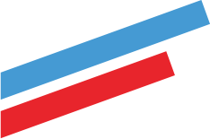

{% extends "layouts/_layout.html" %}

{# partial example #}

{% block content %}
{% include "partials/_header.html" %}

<!-- START hero -->
{% include "partials/_hero.html" %}
<!-- END hero -->


<!-- START mobile-menu -->
<template lang="html">
  <div id="parentx">
    <!-- START title mobile -->
    <div class="main-title-mobile">
      <div class="main-title-mobile__title">
        АККАУНТ
      </div>

      <div class="main-title-mobile__btns">
        <span @click="active=!active" class="main-title-mobile__icon menu-mob">
          
        </span>
        <input v-show="activeSearch" type="text" class="hero__search--input main-title-mobile__btns--input" placeholder="Попробуйте найти..." />
        <span @click="activeSearch=!activeSearch" class="main-title-mobile__icon search-mob">
          
        </span>
      </div>

    </div>
    <!-- END title mobile -->


    <vs-sidebar parent="body" color="primary" class="sidebarx" spacer v-model="active">

      <span @click="active=!active" class="close-sidebar-menu">
        <i class="material-icons">
          close
        </i>
      </span>

      <div class="header-sidebar" slot="header">
        МЕНЮ
      </div>


      <vs-sidebar-item href="#" index="1">
        
        Общая статистика
      </vs-sidebar-item>

      <vs-sidebar-item href="#" index="2">
        
        Спортсмены
      </vs-sidebar-item>

      <vs-sidebar-item href="#" index="3">
        
        Пригласить друзей
      </vs-sidebar-item>


      <vs-sidebar-item href="#" index="4">
        
        Аккаунт
      </vs-sidebar-item>

      <a href="#" class="sidebar-mob-btn">Выход</a>

    </vs-sidebar>

  </div>
</template>
<!-- END mobile-menu -->



<!-- START content -->
<div class="container">
  <div class="grid-container">
    {% include "partials/_sidebar-main.html" %}
    {% include "partials/_user-desc.html" %}
  </div>
</div>
<!-- END content -->


{% include "partials/_footer.html" %}
{% endblock %}
